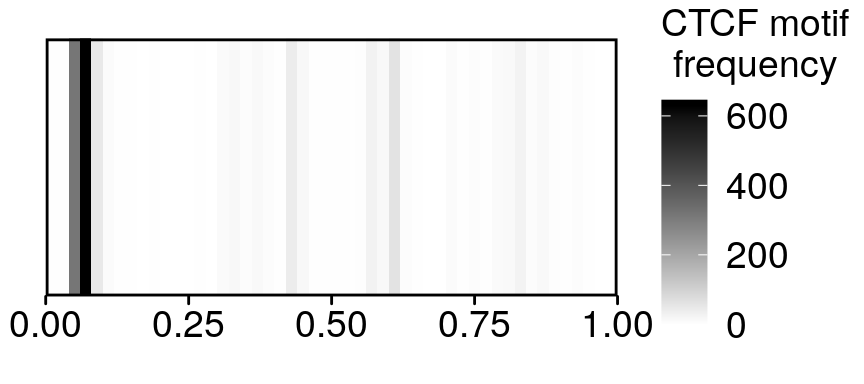
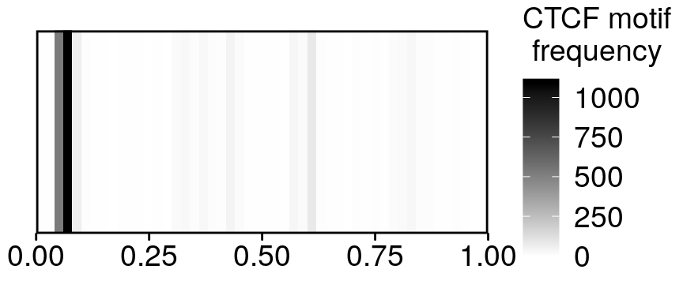
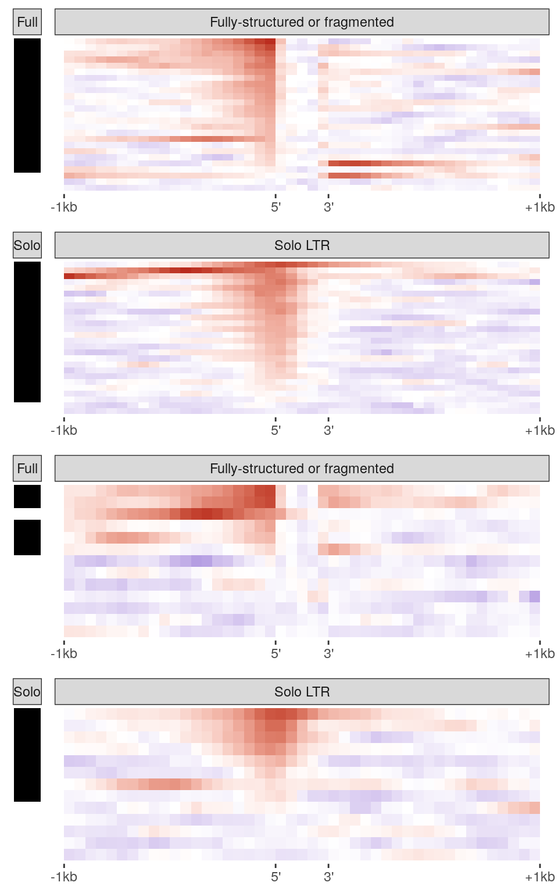
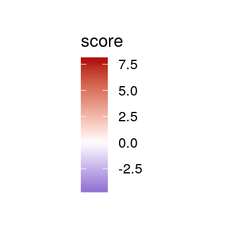

CTCF binding at IAPs
Noah Kessler
24/08/2020
Last updated: 2020-10-21
Checks: 7 0
Knit directory: vm-retrotransposons/
This reproducible R Markdown analysis was created with workflowr (version 1.6.2). The Checks tab describes the reproducibility checks that were applied when the results were created. The Past versions tab lists the development history.
Great! Since the R Markdown file has been committed to the Git repository, you know the exact version of the code that produced these results.
Great job! The global environment was empty. Objects defined in the global environment can affect the analysis in your R Markdown file in unknown ways. For reproduciblity it’s best to always run the code in an empty environment.
The command set.seed(20200511) was run prior to running the code in the R Markdown file. Setting a seed ensures that any results that rely on randomness, e.g. subsampling or permutations, are reproducible.
Great job! Recording the operating system, R version, and package versions is critical for reproducibility.
Nice! There were no cached chunks for this analysis, so you can be confident that you successfully produced the results during this run.
Great job! Using relative paths to the files within your workflowr project makes it easier to run your code on other machines.
Great! You are using Git for version control. Tracking code development and connecting the code version to the results is critical for reproducibility.
The results in this page were generated with repository version 59d60ec. See the Past versions tab to see a history of the changes made to the R Markdown and HTML files.
Note that you need to be careful to ensure that all relevant files for the analysis have been committed to Git prior to generating the results (you can use wflow_publish or wflow_git_commit). workflowr only checks the R Markdown file, but you know if there are other scripts or data files that it depends on. Below is the status of the Git repository when the results were generated:
Ignored files:
Ignored: analysis/02.Screen_for_VM_IAP_cache/
Untracked files:
Untracked: 01.IAP_Annotations.Rmd
Untracked: 20200803.RData
Untracked: FourC.plots.indiv.with_legend.pdf
Untracked: Rplot.svg
Untracked: SciAdv_ME_regions.tsv.txt
Untracked: __pycache__/
Untracked: analysis/06.Methylation_outside_the_IAP.Rmd
Untracked: analysis/07.Genomic_Interactions_with_IAPs.Rmd
Untracked: analysis/08.Screen_for_non_IAP_VM.Rmd
Untracked: code/4C_seq.R
Untracked: code/CTCFChIPatVM-IAPs_narrowpeak.sh
Untracked: code/CTCFChIPatVM-IAPs_pvalueRelax_narrowpeak.sh
Untracked: code/CTCF_Analysis.Rmd
Untracked: code/CTCF_Analysis.nb.html
Untracked: code/CTCF_motif_in_IAP.Rmd
Untracked: code/CTCF_motif_in_IAP.nb.html
Untracked: code/CpGdensity_VM-IAPs.R
Untracked: code/LTR_components.R
Untracked: code/TransposableElements.py
Untracked: code/__pycache__/
Untracked: code/align_and_save.sh
Untracked: code/combine_8Indiv_CTCFChIP.r
Untracked: code/combine_8Indiv_CTCFChIP_pvalueRelax.r
Untracked: code/data_functions.R
Untracked: code/demultiplex4C_5indiv.sh
Untracked: code/element_metatype_boundaries.py
Untracked: code/fix_RepeatMasker_breaks.py
Untracked: code/genomics_functions.R
Untracked: code/heatmaps_NJK.R
Untracked: code/jellyfish_wrapper.py
Untracked: code/kmer_alignment.py
Untracked: code/map.commands_cp.sh
Untracked: code/mergeBam
Untracked: code/normalize_log2.sh
Untracked: code/normalize_log2_IAP_consensus.sh
Untracked: code/normalize_log2_mergedBams.sh
Untracked: code/plot_chip_in_iap.R
Untracked: code/run_fimo_top10percent.sh
Untracked: code/run_meme_top_10_percent.sh
Untracked: data/4C-seq/
Untracked: data/R_objects/
Untracked: data/chromHMM/
Untracked: data/ctcf/
Untracked: data/jellyfish/
Untracked: data/kmer/
Untracked: data/misc/Schema_for_rmskOutCurrent.html
Untracked: data/misc/mm10.chrom.sizes
Untracked: data/repeat_annotations/
Untracked: data/validation/
Untracked: elems_meta.tsv
Untracked: output/CTCF_ChIP.non_VM.pdf
Untracked: output/CTCF_and_motif.NonVM.Full.pdf
Untracked: output/CTCF_and_motif.NonVM.pdf
Untracked: output/CTCF_and_motif.VM.pdf
Untracked: output/CTCF_and_motif.all.a4.pdf
Untracked: output/CTCF_and_motif.all.a4.ps
Untracked: output/CTCF_and_motif.all.a4.svg
Untracked: output/CTCF_heatmap_legend.pdf
Untracked: output/CpG_density_plt.pdf
Untracked: output/FourC.combo_plots.pdf
Untracked: output/FourC.indiv_plots.pdf
Untracked: output/Methylation_outside_cVMIAPs.pdf
Untracked: output/Non_ERV.ranges2.background.png
Untracked: output/Non_ERV.ranges2.foreground.pdf
Untracked: output/Non_ERV.ranges2.foreground.svg
Untracked: test.pdf
Untracked: unsorted.Rmd
Untracked: vm-retrotransposons.Rproj
Untracked: vm_erv.R
Unstaged changes:
Deleted: Paper_VMIAP_2020.Rproj
Modified: README.md
Deleted: analysis/fix_RepeatMasker_breaks.py
Deleted: data/misc/example_broken_IAP.PNG
Note that any generated files, e.g. HTML, png, CSS, etc., are not included in this status report because it is ok for generated content to have uncommitted changes.
These are the previous versions of the repository in which changes were made to the R Markdown (analysis/05.CTCF_at_IAPs.Rmd) and HTML (docs/05.CTCF_at_IAPs.html) files. If you’ve configured a remote Git repository (see ?wflow_git_remote), click on the hyperlinks in the table below to view the files as they were in that past version.
| File | Version | Author | Date | Message |
|---|---|---|---|---|
| Rmd | 59d60ec | Noah Kessler | 2020-10-21 | wflow_publish(“analysis/05.CTCF_at_IAPs.Rmd”) |
| html | efea61e | Noah Kessler | 2020-10-21 | Build site. |
| Rmd | cfa969f | Noah Kessler | 2020-10-21 | wflow_publish(“analysis/05.CTCF_at_IAPs.Rmd”) |
library(dplyr)
library(ggplot2)
library(rtracklayer)
library(ggplot2)
library(readr)
library(knitr)
library(kableExtra)
source("code/genomics_functions.R")
source("code/data_functions.R")
knitr::opts_chunk$set(message = FALSE) plot.heatmap <- function(heatmap.df, feat.width, label.col=NULL) {
if ("type" %in% names(heatmap.df)) {
heatmap.df$old.feat.idx <- heatmap.df$feat.idx
feat.idx.mapping <- heatmap.df[,c("type", "old.feat.idx")] %>%
distinct() %>%
arrange(type, old.feat.idx) %>%
mutate(feat.idx=1:n())
heatmap.df$feat.idx <- NULL
heatmap.df <- left_join(heatmap.df, feat.idx.mapping, by=c("type", "old.feat.idx"))
}
plt <- ggplot(heatmap.df) +
geom_tile(aes(x=pos, y=-feat.idx, fill=score)) +
xlab(NULL) +
ylab(NULL) +
theme_bw() +
theme(panel.border = element_blank(),
panel.grid = element_blank())
if (is.null(label.col)) {
plt <- plt +
theme(axis.text.y = element_blank(),
axis.ticks.y = element_blank())
}
else
{
label.df <- distinct(heatmap.df[,c("feat.idx", label.col)]) %>% arrange(feat.idx)
plt <- plt + scale_y_continuous(breaks=-label.df$feat.idx, labels=label.df[,label.col], expand=expand_scale(add=c(0.2, 0.2)))
}
plt
}
get.x_axis.breaks <- function() {
break.pts <- c(
-1 * FLANK / TILE.WIDTH,
0,
FEATURE.TILES,
FLANK / TILE.WIDTH + FEATURE.TILES
)
return(break.pts - 0.5)
}
polished.heatmap <- function(df, x.edge.str=NULL, show.legend=TRUE) {
if (is.null(x.edge.str)) {
x.edge.str <- as.character(FLANK)
}
x.expand <- c(0.01, 0)
plt <- plot.heatmap(df, FEATURE.TILES) +
scale_fill_gradient2(
limits=SCORE.LIMS,
low="#1012b2", mid="white", high="#b21210",
midpoint=0
) +
scale_y_continuous(expand=c(0.02,0))
if (!show.legend) {
x.expand <- c(0.02, 0)
plt <- plt + guides(fill=FALSE)
}
plt <- plt + scale_x_continuous(
breaks=get.x_axis.breaks(),
labels=c(paste0("-", x.edge.str), "5'", "3'", paste0("+", x.edge.str)),
expand=x.expand
) +
facet_wrap(vars(type), ncol=1, scales="free")
return(plt)
}Identifying CTCF-bound loci and a motif
Deeptools was used to generate determine CTCF binding scores in 50-bp tiles across the genome, using the combined reads of all eight individuals. The score is the log2 ratio of IP reads to input reads.
MACS was used to call peaks across the combined eight-individual dataset and a flanking region around summits was used as input to MEME to generate peaks. FIMO was then used to identify the locations of that motif within the IAP LTRs.
# get GRanges of full IAP extents
IAP.extent.gr <- extent.gr(
with(
read_tsv("data/repeat_annotations/mm10.IAP.mended.tsv", col_names=FALSE),
GRanges(X1, IRanges(X2, X3), strand=X4, element.ID=X10)
),
by="element.ID"
)
# load validated element IDs
validation <- readRDS("data/R_objects/validation_name_ID.RDS") %>%
filter(val_category != "False positive")
# get element IDs of solo LTRs
solo.LTR.IDs <- readRDS("data/R_objects/mm10.IAP.meta.RDS") %>%
group_by(element.ID) %>%
filter(n()==1) %>%
ungroup() %>%
filter(meta.subelement=="1:LTR:1") %>%
pull(element.ID)
# set parameters for plotting
FLANK <- 1000
TILE.WIDTH <- 50
FEATURE.TILES <- 5
X.EDGE.STR <- "1kb"
# load CTCF data
log2_merged_mapq_ge_10.data.gr <- with(
read_tsv(file.path(params$ctcf_norm_dir, "log2ratio_mapq_ge_10.bdg"), col_names = FALSE),
GRanges(X1, IRanges(X2, X3), score=X4)
)
# make CTCF data 1-indexed and non-overlapping
log2_merged_mapq_ge_10.data.gr <- resize(
log2_merged_mapq_ge_10.data.gr,
width=width(log2_merged_mapq_ge_10.data.gr)-1,
fix="end"
)
# generate heatmap tile data
merged_mapq_ge_10.hm.df <- as.data.frame(
mcols(score.features(
log2_merged_mapq_ge_10.data.gr,
gr.inside.flank.tiles(IAP.extent.gr, 5, 1000, 50, keep.cols="element.ID"),
"score"
))
)
# get elements ordered by CTCF at 5' outside tile
IAP_ctcf_meta <- merged_mapq_ge_10.hm.df %>%
as.data.frame %>%
filter(pos==-1) %>%
arrange(desc(score)) %>%
mutate(feat.idx=1:n()) %>%
dplyr::select(element.ID, feat.idx) %>%
left_join(validation, by="element.ID")
# add column for solo vs full/fragmented
IAP_ctcf_meta$type <- ifelse(
IAP_ctcf_meta$element.ID %in% solo.LTR.IDs,
"Solo LTR",
"Fully-structured or fragmented"
)
# add order column
merged_mapq_ge_10.hm.df <- left_join(merged_mapq_ge_10.hm.df, IAP_ctcf_meta, by="element.ID")
# define score limits
SCORE.LIMS <- c(
min(merged_mapq_ge_10.hm.df$score, na.rm=TRUE),
max(merged_mapq_ge_10.hm.df$score, na.rm=TRUE)
)
# make CTCF plots
ctcf.plt.non_vm <- merged_mapq_ge_10.hm.df %>%
filter(is.na(val_category)) %>%
polished.heatmap(X.EDGE.STR)
ctcf.plt.c_vm <- merged_mapq_ge_10.hm.df %>%
filter(val_category=="Constitutive") %>%
polished.heatmap(X.EDGE.STR)
ctcf.plt.ts_vm <- merged_mapq_ge_10.hm.df %>%
filter(val_category=="Tissue-specific") %>%
polished.heatmap(X.EDGE.STR)CTCF motif: location within IAP LTRs
The location of the motif within IAP LTRs is shown. The location is normalised to the length of each LTR and given in 0.02-length bins. Data is presented for 5’ LTRs only and for all LTRs.
plot.1d.heatmap <- function(df, bin.col, BW, legend.name=NULL) {
if (is.null(legend.name)) {
legend.name <- bin.col
}
bin.col <- enquo(bin.col)
ggplot(df) +
geom_tile(aes(x=!!bin.col + BW/2, y=0.5, width=BW, height=1, fill=count)) +
scale_fill_gradient(name=legend.name, low="white", high="black", limits=c(0, max(df$count))) +
xlab(NULL) + ylab(NULL) +
scale_x_continuous(limits=c(0, 1), expand=c(0, 0)) +
scale_y_continuous(expand=c(0, 0)) +
theme_minimal() +
theme(
panel.grid = element_blank(),
axis.text.x = element_text(color="black", size=14),
axis.ticks.x = element_line(color="black", size=0.5),
axis.ticks.y = element_blank(),
axis.text.y = element_blank(),
panel.border = element_rect(color="black", fill=NA, size=1),
plot.margin = unit(c(1,0,1,1), units="lines"),
legend.text = element_text(size=14),
legend.title = element_text(size=14, hjust = 0.5)
)
}
make.motif.plt <- function(df, theme_fn=theme_bw) {
margin.to.use <- theme_fn()$plot.margin
margin.to.use[2] <- unit(0, "pt")
margin.to.use[4] <- unit(0, "pt")
df %>%
mutate(score=has.motif, pos=1) %>%
plot.heatmap(df) +
scale_fill_manual(values=c(`TRUE`="black", `FALSE`="#00000000"))+
scale_y_continuous(expand=c(0.02,0)) +
guides(fill=FALSE) +
facet_wrap(vars(type), ncol=1, scales="free_y") +
theme(
axis.ticks.x = element_blank(),
axis.text.x = element_blank(),
plot.margin = margin.to.use
)
}
combine.motif.and.ctcf.plot <- function(motif.plt, ctcf.plt) {
cowplot::plot_grid(
motif.plt,
ctcf.plt,
nrow=1,
rel_widths=c(0.075, 0.925),
align="hv",
axis="ltb"
)
}
#load CTCF motif location data
fimo.CTCF.gr <- with(
read_tsv("data/ctcf/motif/fimo.multiFixed.MEME-1.tsv", col_names = FALSE),
GRanges(X1, IRanges(X2, X3), element.ID=X4, subelementID=X5, subelemCoord=X7, motif=toupper(X8), strand=X6, motifStart=X9, motifEnd=X10, motifID=X12)
)
fimo.motif.df <- mcols(fimo.CTCF.gr) %>%
as.data.frame %>%
filter(motifID=="MEME-1" & grepl(":LTR:", subelementID)) %>%
mutate(
is.5p.LTR=grepl(":LTR:1",subelementID),
subelem.width=width(GRanges(subelemCoord)),
motif.start.frac=motifStart / subelem.width
)
# plot locations of motifs in 1-d heatmap
FRAC.BINWIDTH <- 1/50
motif.frac.counts <- fimo.motif.df %>%
filter(is.5p.LTR) %>%
mutate(frac.bin=FRAC.BINWIDTH * floor(motif.start.frac / FRAC.BINWIDTH)) %>%
group_by(frac.bin) %>%
summarize(count=n())
plot.1d.heatmap(motif.frac.counts, frac.bin, FRAC.BINWIDTH, "CTCF motif\nfrequency")
| Version | Author | Date |
|---|---|---|
| efea61e | Noah Kessler | 2020-10-21 |
motif.frac.counts.all_LTR <- fimo.motif.df %>%
#filter(is.5p.LTR) %>%
mutate(frac.bin=FRAC.BINWIDTH * floor(motif.start.frac / FRAC.BINWIDTH)) %>%
group_by(frac.bin) %>%
summarize(count=n())
plot.1d.heatmap(motif.frac.counts.all_LTR, frac.bin, FRAC.BINWIDTH, "CTCF motif\nfrequency")
| Version | Author | Date |
|---|---|---|
| efea61e | Noah Kessler | 2020-10-21 |
# plot vertical presence/absence plot of motif
fimo.motif.bar.df <- fimo.motif.df %>%
filter(is.5p.LTR) %>%
left_join(IAP_ctcf_meta, ., by="element.ID") %>%
mutate(has.motif=!is.na(motif.start.frac)) %>%
dplyr::select(element.ID, feat.idx, val_category, name, type, has.motif) %>%
distinct()
# use shortened facet titles
fimo.motif.bar.df$type <- ifelse(
fimo.motif.bar.df$element.ID %in% solo.LTR.IDs,
"Solo",
"Full"
)CTCF in all across IAPs
CTCF scores from deeptools are shown for a 1 kb-flanked window around each IAP. Deeptools log2 ratios are averaged across 50 bp tiles in the flanking regions, and across the five tiles of equal length within each element. Elements are sorted by averaged log2 score in the 50 bp flanking tile immediately upstream of the 5’ edge of each LTR. Motif presence/absence tiles show whether the element’s 5’ LTR contains the primary MEME motif.
### combined plots
ctcf.plot.legend <- merged_mapq_ge_10.hm.df[1,] %>%
polished.heatmap(X.EDGE.STR) %>%
cowplot::get_legend() %>%
cowplot::ggdraw()
combined.IAP_no_VM.Full <- combine.motif.and.ctcf.plot(
fimo.motif.bar.df %>%
filter(is.na(val_category) & type=="Full") %>%
make.motif.plt,
merged_mapq_ge_10.hm.df %>%
filter(is.na(val_category) & type=="Fully-structured or fragmented") %>%
polished.heatmap(X.EDGE.STR, show.legend=FALSE)
)
combined.IAP_no_VM.Solo <- combine.motif.and.ctcf.plot(
fimo.motif.bar.df %>%
filter(is.na(val_category) & type=="Solo") %>%
make.motif.plt,
merged_mapq_ge_10.hm.df %>%
filter(is.na(val_category) & type=="Solo LTR") %>%
polished.heatmap(X.EDGE.STR, show.legend=FALSE)
)
combined.IAP_c_VM.Full <- combine.motif.and.ctcf.plot(
fimo.motif.bar.df %>%
filter(val_category=="Constitutive" & type=="Full") %>%
make.motif.plt,
merged_mapq_ge_10.hm.df %>%
filter(val_category=="Constitutive" & type=="Fully-structured or fragmented") %>%
polished.heatmap(X.EDGE.STR, show.legend=FALSE)
)
combined.IAP_c_VM.Solo <- combine.motif.and.ctcf.plot(
fimo.motif.bar.df %>%
filter(val_category=="Constitutive" & type=="Solo") %>%
make.motif.plt,
merged_mapq_ge_10.hm.df %>%
filter(val_category=="Constitutive" & type=="Solo LTR") %>%
polished.heatmap(X.EDGE.STR, show.legend=FALSE)
)
combined.IAP_ts_VM.Full <- combine.motif.and.ctcf.plot(
fimo.motif.bar.df %>%
filter(val_category=="Tissue-specific" & type=="Full") %>%
make.motif.plt,
merged_mapq_ge_10.hm.df %>%
filter(val_category=="Tissue-specific" & type=="Fully-structured or fragmented") %>%
polished.heatmap(X.EDGE.STR, show.legend=FALSE)
)
combined.IAP_ts_VM.Solo <- combine.motif.and.ctcf.plot(
fimo.motif.bar.df %>%
filter(val_category=="Tissue-specific" & type=="Solo") %>%
make.motif.plt,
merged_mapq_ge_10.hm.df %>%
filter(val_category=="Tissue-specific" & type=="Solo LTR") %>%
polished.heatmap(X.EDGE.STR, show.legend=FALSE)
)
combined.IAP_no_VM <- cowplot::plot_grid(combined.IAP_no_VM.Full, combined.IAP_no_VM.Solo, ncol=1)
combined.IAP_VM <- cowplot::plot_grid(
combined.IAP_c_VM.Full,
combined.IAP_c_VM.Solo,
combined.IAP_ts_VM.Full,
combined.IAP_ts_VM.Solo,
ncol=1
)
ggsave("output/CTCF_and_motif.NonVM.pdf", combined.IAP_no_VM, width=5, height=8)
ggsave("output/CTCF_and_motif.VM.pdf", combined.IAP_VM, width=5, height=8)
ggsave("output/CTCF_and_motif.all.a4.pdf", cowplot::plot_grid(combined.IAP_no_VM, combined.IAP_VM, ncol=2), width=8.3*0.95, height=11.7*0.6)
ggsave("output/CTCF_and_motif.all.a4.svg", cowplot::plot_grid(combined.IAP_no_VM, combined.IAP_VM, ncol=2), width=8.3*0.95, height=11.7*0.6)
ggsave("output/CTCF_and_motif.all.a4.ps", cowplot::plot_grid(combined.IAP_no_VM, combined.IAP_VM, ncol=2), width=8.3*0.95, height=11.7*0.6)
ggsave("output/CTCF_heatmap_legend.pdf", ctcf.plot.legend, width=1, height=2)
print(combined.IAP_no_VM)
print(combined.IAP_VM)
print(ctcf.plot.legend)
sessionInfo()R version 3.6.1 (2019-07-05)
Platform: x86_64-pc-linux-gnu (64-bit)
Running under: Debian GNU/Linux 9 (stretch)
Matrix products: default
BLAS: /usr/lib/libblas/libblas.so.3.7.0
LAPACK: /usr/lib/lapack/liblapack.so.3.7.0
locale:
[1] LC_CTYPE=en_GB.UTF-8 LC_NUMERIC=C
[3] LC_TIME=en_GB.UTF-8 LC_COLLATE=en_GB.UTF-8
[5] LC_MONETARY=en_GB.UTF-8 LC_MESSAGES=en_GB.UTF-8
[7] LC_PAPER=en_GB.UTF-8 LC_NAME=C
[9] LC_ADDRESS=C LC_TELEPHONE=C
[11] LC_MEASUREMENT=en_GB.UTF-8 LC_IDENTIFICATION=C
attached base packages:
[1] parallel stats4 stats graphics grDevices utils datasets
[8] methods base
other attached packages:
[1] gdtools_0.2.1 kableExtra_1.1.0 knitr_1.26
[4] readr_1.3.1 rtracklayer_1.44.4 GenomicRanges_1.36.1
[7] GenomeInfoDb_1.20.0 IRanges_2.18.3 S4Vectors_0.22.1
[10] BiocGenerics_0.30.0 ggplot2_3.2.1 dplyr_0.8.3
loaded via a namespace (and not attached):
[1] Biobase_2.44.0 httr_1.4.1
[3] viridisLite_0.3.0 assertthat_0.2.1
[5] GenomeInfoDbData_1.2.1 Rsamtools_2.0.3
[7] yaml_2.2.0 pillar_1.4.2
[9] backports_1.1.5 lattice_0.20-41
[11] glue_1.3.1 digest_0.6.23
[13] promises_1.1.0 XVector_0.24.0
[15] rvest_0.3.5 colorspace_1.4-1
[17] cowplot_1.0.0 htmltools_0.4.0
[19] httpuv_1.5.2 Matrix_1.2-18
[21] XML_3.98-1.20 pkgconfig_2.0.3
[23] zlibbioc_1.30.0 purrr_0.3.3
[25] scales_1.1.0 webshot_0.5.2
[27] svglite_1.2.3 whisker_0.4
[29] later_1.0.0 BiocParallel_1.18.1
[31] git2r_0.26.1 tibble_2.1.3
[33] farver_2.0.1 withr_2.1.2
[35] SummarizedExperiment_1.14.1 lazyeval_0.2.2
[37] magrittr_1.5 crayon_1.3.4
[39] evaluate_0.14 fs_1.3.1
[41] xml2_1.2.2 tools_3.6.1
[43] hms_0.5.2 lifecycle_0.1.0
[45] matrixStats_0.55.0 stringr_1.4.0
[47] munsell_0.5.0 DelayedArray_0.10.0
[49] Biostrings_2.52.0 compiler_3.6.1
[51] systemfonts_0.1.1 rlang_0.4.2
[53] grid_3.6.1 RCurl_1.95-4.12
[55] rstudioapi_0.10 bitops_1.0-6
[57] labeling_0.3 rmarkdown_1.18
[59] gtable_0.3.0 R6_2.4.1
[61] GenomicAlignments_1.20.1 zeallot_0.1.0
[63] workflowr_1.6.2 rprojroot_1.3-2
[65] stringi_1.4.3 Rcpp_1.0.3
[67] vctrs_0.2.0 tidyselect_0.2.5
[69] xfun_0.11